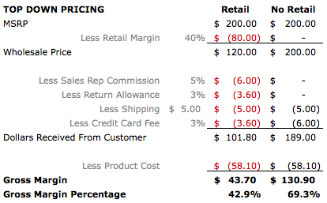
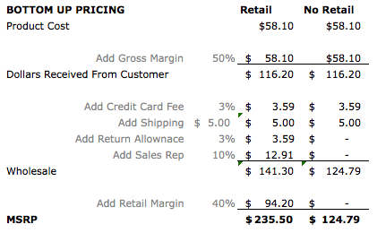

<!DOCTYPE html>

<head>

  <title>Mohammed Al-Adeeb's Blog</title>

  <link href='https://fonts.googleapis.com/css?family=Londrina+Outline' rel='stylesheet' type='text/css'>
  <link href='https://fonts.googleapis.com/css?family=Open+Sans' rel='stylesheet' type='text/css'>
  <!--no link for font Proxima Nova-->
  <!--what does https do as a opposed to http for fonts?-->
  <link href="blog.css" rel="stylesheet">

</head>

<body>
  <header>
     <!--If I comment this line out, why does the top get a space>-->
    <h1>Blog</h1>
  <!--Sweet and Sour on Tech-->
    <ul>
      <li><a href="index.html" class="navigation_bar">Home</a></li>
      <li><a href="#" class="navigation_bar">Popular Posts</a></li>
      <li><a href="#" class="navigation_bar">Products Reviewed</a></li>
    </ul>
  </header>
  <br>
  <article>
  	<h2>Chrome Tool for Mobile Development</h2>
  	<button>Like</button>
  	<p>To emulate your mobile site on any given device and look at your code on the same screen, Chrome released a great new tool. It can simulate touch and pinch to zoom. It displays your mobile devices screen alongside your code and the Chrome devtools. Some of these tools allow you to easily check what assets you&#39re sending to what specific devices and to check geolocated views. The tool can also simulate your device, giving you the ability to fully control your handheld through the desktop without losing any control from your handheld's screen. <br></p>
  	Check it out at <a href="https://developers.google.com/chrome-developer-tools/" class="regular">devtools.chrome.com</a><br>
  	<br>
  	Emulation:<br>
  	<iframe width="560" height="315" src="http://www.youtube.com/embed/z7sTRdSpA04" frameborder="0" allowfullscreen></iframe><br>
  	<br>
  	Simulation:<br>
	<iframe width="560" height="315" src="http://www.youtube.com/embed/Q7rEFEMpwe4" frameborder="0" allowfullscreen></iframe>
  </article>
  <br><br>
  <article>
  	<h2>Rise of Bitcoins</h2>
  	<button>Like</button>
  	<p>The skyrocketing rise in Bitcoins value is rather interesting. When they first came out in 2009, I thought that it will be useful to a small group of people in the world looking to mask their illegal activity online. But after the incident at Silk Road, I realized (see <a href="https://bitcorati.com/2013/11/13/10-reasons-why-the-value-of-bitcoin-is-skyrocketing/" class="regular">here</a>) that Bitcoins arn&#39t just used by the illegal online marketplace. It has a much larger usage; probably by people seeking to lower their transaction fees that are typically processed by credit card companies.<br>
	<br>
	If Bitcoins become more popular, which I suspect they will, it&#39s possible that they will become the predominant form of currency. More so, Bitcoins are free from national politics and centralized control. This is a huge advantage, particularly in light of the US debt crisis.</p>
  </article>
  <br>
  <article>
  	<h2>The Buckypaper Future</h2>
  	<button>Like</button>
  	<p>Buckypaper is a sheet of nanotubes held together like fiber. It going to radically changes exsisting markets and likely create new one.</p>
  	<a href="http://en.wikipedia.org/wiki/Buckypaper" class="regular">en.wikipedia.org/wiki/Buckypaper</a><br>
  	<br>
  	<a href="http://www.buckypaper.com/" class="regular">www.buckypaper.com</a><br>
  	<br>
  	<iframe width="560" height="315" src="http://www.youtube.com/embed/nRMiQRiK5GY" frameborder="0" allowfullscreen></iframe>
  </article>
  <br><br>
  <article>
  	<h2>Pricing Your Product Series<br>
  		Hardware</h2><button>Like</button>
  	<p class="small_note">*Excerpts from the article <a href="http://www.hackthings.com/how-to-price-your-hardware-product/" class="regular">How to Price Your Hardware Product</a>
	<p>In pricing a hardware product you should leave a gross margin of 50%. Gross margin is the &#34difference between how much cash you keep from the customer and the amount in cash you paid to deliver a final product to your front door.&#34 This margin allows you to absorb unexpected costs as you get started out and still stay in business. Since you&#39ve already made the product and know the costs the go into making your device, unexpected costs typically arise from packaging and shipping. &#34Don&#39t get fooled when the supplier gives you an initial price without packaging or a price with packaging you have never seen before.&#34<br>
	<br>
	&#34Once you come to an agreement on the final price of the product, you can call on a handful of logistics companies to figure out the shipping costs. You are a long ways from shipping palettes or containers full of product, which means you will be airfreighting everything, the most expensive option available.  Be sure to shop around for the best price.&#34<br>
	<br>
	There are also costs to support customers and manage defective units. &#34A 2% defective rate would be amazing, but don&#3t be surprised if it&#39s 15% when you start.&#34 You will need to work out in legal documents with your supplier who is going to cover the costs of replacing defective units and what the process is to repair them &#34Regardless, expect to cover the customer&#39s shipping costs (both directions) to replace the the crappy product you sold them.&#34<br>
	<br>
	As a startup, you want to aim at selling 1000 units a month. If it costs you $50 to manufacture a unit with the packaging you want, then add the following costs in order to know your total costs per unit:<br>
	<br>
	Shipping (door delivery) say $5<br>
	<br>
	Support Costs (Number of support personnel 1, salary per hour $10, hours worked per month 160, number of units sold per month 1,000) = $10/hr * 160 hrs/month / 1000 units/month = $1.60/unit<br>
	<br>
	Shipping Costs for Defective Units (Percent defective 15%, shipping to and from customer $10) = $10 per defective unit * 1000 units/month * 15% defective units / unit = $1,500/month / 1,000 units/month = $1.50/unit<br>
	<br>
	Cost to Repair and Repackage Defective Unit (Assuming I&#39ve figured out a process and agreement with the supplier to cost me only 25% of manufacturing costs) = $50/unit * 0.25 = $12.5 * 1000 units/month * 0.15 defective units/ unit = 1,875 / 1000 units = $1.88/unit<br>
	<br>
	Total Costs per Unit = $59.98<br>
	<br>
	To get an idea of what your customers will pay for your product, you want to look at who your target audience is and what they spend on comparable products. Classify what end of the spectrum your product sits in, as a luxury item, some where in the middle, or economical item. Each have certain price profiles, this will give you a price range to aim for.<br>
	<br>
	To measure gross profit, assume you sell your product at $200. You typically sell a products at a distribution channel at four times the production cost.  If you decide to go to retail eventually, you need to price your product to include the costs of eventually going retail. Pricing your product to sell directly to your customers &#34when you aren&#39t yet sure on your distribution strategy can be a costly mistake, especially if you want to be in retail down the road.&#34<br>
	<br>
	</img><br>
	<p class="small_note">From Marc Barros&#39s <a href="http://www.hackthings.com/how-to-price-your-hardware-product/" class="regular">How to Price Your Hardware Product</a></p>
	I calculated a Product Cost of $59.98, this results with a Gross Margin Percentage of: 41.1% and 68.3%.  You want to adjust your MSRP such that your Gross Margin is at least 50%.<br>
	<br>
	So to figure out what MSRP should be, use the Bottom Up approach:<br>
	<br>
	<br>
	<p class="small_note">From Marc Barros&#39s <a href="http://www.hackthings.com/how-to-price-your-hardware-product/"  class="regular">How to Price Your Hardware Product</a></p>
	Using my numbers for Product Cost, MSRP should be $237.38 and $126.67.<br>
	<br>
	If you don&#39t find the right price for your product and give your self enough of a Gross Margin to keep business afloat until you can figure out how to reduce costs, you may run yourself out of business. MSRP may be a lot hight than you expected to sell your item. That&#39s okay, &#34your initial customers will be early adopters and if they aren&#39t willing to pay your high price, you most likely didn&#39t create a product they can&#39t live without.&#34<br>
	<br>
	&#34Don&#39t be afraid to charge more. Long term, your loyal customers will thank you for staying in business.&#34
  	</p>
  </article>
  <br>
  <script>
    $("button").on("click", function() { alert("clicked!") } ); 
  </script></body>